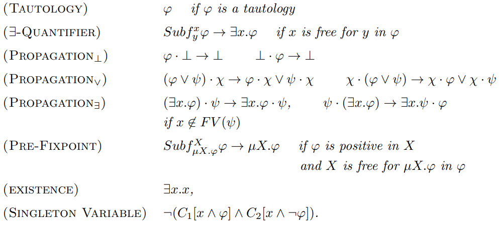

Matching logic proof system (deduction rules)

Traian Florin Șerbănuță
Runtime Verification; UniBuc
Logic Seminar, FMI@UniBuc
φ: :=x ∣ X ∣ φ → φ′ ∣ ∃x.φ ∣ μX.φ ∣ σ ∣ φ ⋅ φ′∣
valuation satisfaction: ğ’œâ€„⊨ ϕ[e] if e+(ϕ) = A
model satisfaction: ğ’œâ€„⊨ ϕ if ğ’œâ€„⊨ ϕ[e] for every valuation e
validity:  ⊨ ϕ if ğ’œâ€„⊨ ϕ for every structure 𝒜
global semantic consequence: ϕ⊨gϕ′ if for every 𝒜, ğ’œâ€„⊨ ϕ implies ğ’œâ€„⊨ ϕ′
local semantic consequence: ϕ⊨lϕ′ if for every 𒜠and e, ğ’œâ€„⊨ ϕ[e] implies ğ’œâ€„⊨ ϕ′[e]
strong semantic consequence: ϕ⊨sϕ′ if for every 𒜠and e, e+(ϕ) ⊆ e+(ϕ′).
globally/locally/strongly logically equivalent: ϕ≡*ϕ′ if ϕ⊨*ϕ′ and ϕ′⊨*ϕ, where * is g, l, or s
valuation satisfaction for sets of patterns: ğ’œâ€„⊨ Γ[e] if ğ’œâ€„⊨ ϕ[e] for every ϕ ∈ Γ
model satisfaction: ğ’œâ€„⊨ Γ if ğ’œâ€„⊨ Γ[e] for every valuation e
validity:  ⊨ Γ if ğ’œâ€„⊨ Γ for every structure 𝒜
global semantic consequence: Γ⊨gΔ if for every 𝒜, ğ’œâ€„⊨ Γ implies ğ’œâ€„⊨ Δ
local semantic consequence: Γ⊨lΔ if for every 𒜠and e, ğ’œâ€„⊨ Γ[e] implies ğ’œâ€„⊨ Δ[e]
strong semantic consequence: Γ⊨sΔ if for every 𒜠and e, ⋂γ ∈ Γe+(γ) ⊆ ⋂δ ∈ Δe+(δ)
Γ⊨*ϕ if Γ⊨*{ϕ}.
⊨s is stronger than ⊨l which is stronger than ⊨g

Institute of Logic and Data Science, Bucharest
Phase I (completed)
Phase II (not yet started?)
http://github.com/traiansf/aml-in-coq